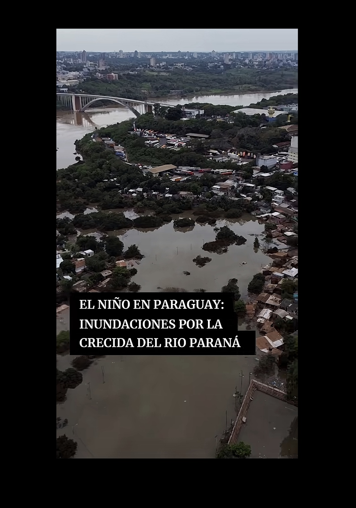
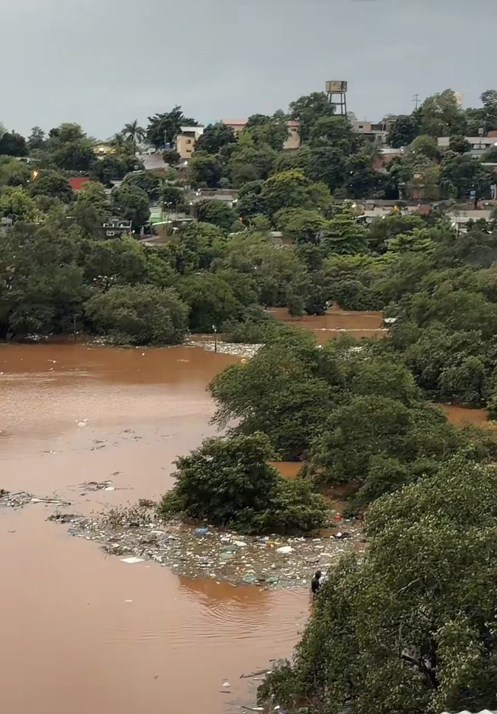
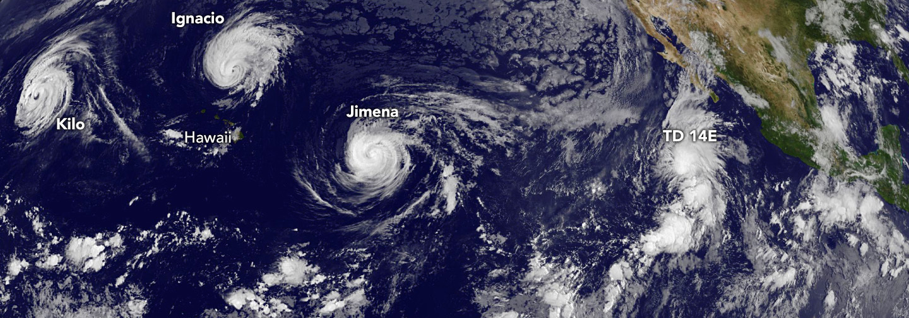
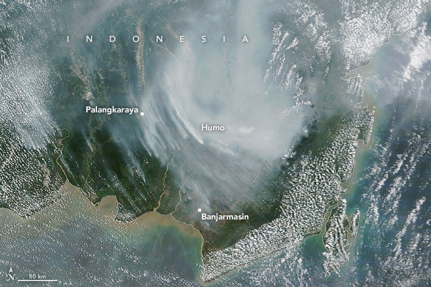

Monitor de El Niño
Seguimiento del fenómeno ENSO con información oficial de la NOAA y su impacto en la región.
¿Qué es El Niño?
El Niño es la fase cálida del ciclo ENSO (El Niño–Oscilación del Sur), un fenómeno de interacción entre el océano y la atmósfera. Ocurre cuando las aguas superficiales del Pacífico ecuatorial central y oriental se mantienen por encima de lo normal durante un período prolongado.
La anomalía de temperatura en la región Niño 3.4 se usa como referencia. El índice ONI, el promedio móvil de tres meses de esa anomalía, identifica un episodio cuando alcanza +0,5 °C o más de forma sostenida durante al menos cinco meses consecutivos. Un valor de +1,5 °C o más corresponde a un episodio fuerte.
Cada boletín mensual del Climate Prediction Center (CPC) de la NOAA indica el estado del fenómeno a la fecha de su publicación.
Impacto regional
América del Sur
En el sur de Sudamérica, El Niño suele asociarse con lluvias por encima de lo normal en el sur de Brasil, Uruguay, el noreste de Argentina y la Cuenca del Plata, donde se ubica Paraguay. Un exceso de lluvia puede causar inundaciones en zonas bajas y dificultar la cosecha.
En el norte de la región el patrón cambia. En la costa norte de Perú y de Ecuador, el mar cálido se asocia con lluvias intensas, mientras que en el nordeste de Brasil y en parte de la Amazonía es más frecuente la sequía.
En Paraguay, el efecto más habitual es un aumento de lluvias, sobre todo en la región oriental. Su intensidad varía de un episodio a otro, por lo que conviene seguir el pronóstico del servicio meteorológico nacional.
Centroamérica y Norteamérica
En Centroamérica, El Niño suele reducir las lluvias durante la primera siembra, lo que agrava el estrés hídrico en el Corredor Seco. En el Atlántico tiende a disminuir la actividad de huracanes, porque aumenta la cizalladura del viento. En Norteamérica, el efecto típico en invierno es más lluvia en el sur de Estados Unidos y el norte de México.
Agricultura y precios
El efecto sobre los precios depende de la región productora. En general, El Niño tiende a reducir la producción de trigo en Australia, de aceite de palma en Indonesia y Malasia, y de maíz en el sur de África, y puede debilitar el monzón de la India. Cuando baja la oferta, las cotizaciones suelen subir.
En Argentina y Paraguay, las condiciones suelen ser favorables para cultivos de verano como la soja, aunque el exceso de lluvia puede retrasar siembras y cosechas.
Los mercados reaccionan a los pronósticos, no solo a los hechos. Por eso los precios pueden moverse semanas antes de que el efecto llegue al campo.
Galería de fotos
Registro fotográfico de daños causado por el niño.
📷 Toca aquí para desplegar las fotos del álbum

Río Alto Paraná
Vista del río en la zona del Alto Paraná.

Inundación en la región
Registro de una crecida en la zona.

Luvias causan inundaciones
La lluvia intensa en las zonas urbanas causando inundaciones.

Registro de la zona
Imagen de la zona de la asociación.

Ciclones tropicales en el Pacífico
Imagen: NASA Earth Observatory.

Humo de incendios en Indonesia
Se agravan en años secos de El Niño. Imagen: NASA Earth Observatory.
Mapa de viento y temperatura
Visualización de viento y temperatura para el Pacífico y Sudamérica.
Para ver el mapa completo, abre Windy en otra pestaña.
Probabilidades de El Niño
Probabilidades publicadas por el Climate Prediction Center de la NOAA. Se actualizan con cada boletín mensual.
| Horizonte | Probabilidad | Aspecto a seguir |
|---|---|---|
| Próximo trimestre | Por confirmar | Anomalía del Niño 3.4 y lluvias en el sur de Sudamérica |
| Dentro de dos trimestres | Por confirmar | Cosecha de verano en Argentina y Paraguay |
| Próximos seis meses | Por confirmar | Precios de trigo, aceite de palma y café |